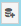

Fiche 05 -- Configuration des Objets Réseau
Les objets réseau sont notamment nécessaires à la mise en place de règles de filtrage et de NAT.
Présentation des Objets
Les menus de configuration des pare-feu Stormshield Network utilisent des objets qui représentent des valeurs (adresse IP, adresse réseau, URL, événement temporel, etc.). L'utilisation d'objets au lieu de valeurs présente deux avantages majeurs :
-
Cela permet à l'administrateur de manipuler des noms, plus parlants que des valeurs.
-
Dans le cas où une valeur change, il suffira de modifier la valeur au niveau de l'objet et non dans tous les menus où l'objet est utilisé.
La création et la configuration des objets s'effectuent :
- Dans le menu : CONFIGURATION / OBJETS
- Dans le menu raccourci :
- Depuis n'importe quel autre menu via le bouton 
Les objets sont classés en 3 catégories :
- Objets Réseau : regroupe tous les objets en relation avec les valeurs réseaux (adresse IP, numéro de port, numéro de protocole, etc.) et les objets temps (par exemple, l'objet Machine FWOUT_Siege qui représente la passerelle des agences).
- Objets Web : groupes d'URL (ou groupes de catégories) et groupes de noms de certificats.
- Certificats et PKI : permet la création et la gestion des autorités de certification et de tous les certificats (de type serveur, utilisateur, ou smartcard) qui en découlent.
On peut distinguer deux types d'objets particuliers en plus des objets qui peuvent être créés par l'administrateur :
- Objets implicites : ils sont créés automatiquement par le pare-feu et dépendent de la configuration réseau. Ces objets sont en lecture seule et ne peuvent être ni modifiés ni supprimés par l'administrateur. Par exemple, l'objet « Firewall_out », créé automatiquement lorsqu'une adresse IP est associée à l'interface « OUT » ou l'objet « Network_internals » qui regroupe tous les réseaux accessibles via les interfaces internes.
- Objets pré-configurés : ils sont présents par défaut dans la liste des objets. Ils représentent des valeurs de paramètres réseaux standardisées (ports, protocoles, réseaux) et des valeurs nécessaires pour le fonctionnement du pare-feu (adresse IP des serveurs Stormshield pour les mises à jour). On trouvera par exemple le protocole ICMP et l'objet « Internet » qui regroupe l'ensemble des machines ne faisant pas partie des réseaux internes.
Attention
Il est conseillé d'utiliser les objets implicites et pré-configurés et d'éviter de créer d'autres objets portant les mêmes valeurs.
Les recommandations sont les suivantes :
- utiliser les objets implicites ou pré-configurés ;
- suivre une convention de nommage des objets bien définie et l'appliquer strictement évite la création de doublons et facilite la lecture des objets ;
- utiliser un groupe d'objet d'administration contenant l'ensemble des IP et des réseaux d'administration permet de réutiliser ce groupe dans toutes les règles de filtrage liées à l'administration et donc de maintenir leur cohérence tout en facilitant leur modification ;
- limiter l'usage des objets dynamiques (type FQDN et Dynamic Host) : ils génèrent des requêtes DNS régulières. Cela sollicite le réseau et le pare-feu, utilisez cette fonctionnalité lorsqu'elle est nécessaire ;
- limiter le nombre d'objets inutilisés : ils chargent l'affichage et sont bien souvent oubliés et recréés ;
- éviter les doublons, ils doivent être traqués et supprimés car c'est une source d'erreur courante lors de la modification de règles de filtrage. On se retrouve dans un cas où la modification d'un objet n'impacte pas toutes les règles qui auraient dû l'être, créant ainsi des trous dans la sécurité.
La syntaxe des noms des objets (insensible à la casse) doit respecter quelques restrictions définies dans le tableau ci-dessous :
Création des objets « Réseaux »
Le menu Configuration / Objets / Objets réseau ou le menu Objets réseau permettent de visualiser les objets, de les modifier ou d'en ajouter.
- Ouvrir Configuration / Objets / Objets réseau et cliquer sur le bouton Ajouter pour ajouter les objets souhaités.
Les types d'objets suivants peuvent être créés :
- Machine : une adresse IP,
- Nom DNS (FQDN) : toutes les adresses IP associées à un nom FQDN par résolution DNS,
- Réseau : une adresse réseau,
- Plage d'adresses IP : une plage d'adresses,
- Routeur : permet de renseigner une ou plusieurs passerelles pour un routage par répartition de charge avec ou sans passerelle de secours.
- Groupe : un groupe d'objets portant une ou plusieurs adresses IP : machines, plages d'adresses IP, réseaux ou d'autres groupes,
- Protocole IP : l'ID du protocole au niveau IP,
- Port - Plage de ports : un port ou une plage de ports. Il/Elle peut être limité(e) à un protocole de transport particulier (TCP ou UDP),
- Groupe de ports : un groupe d'objets portant des ports ou des plages de ports, ainsi que d'autres groupes de ports,
- Groupe de régions : un groupe de pays ou de continents. Ce type d'objet peut être utilisé dans la géolocalisation des adresses IP,
- Objet temps : un événement temporel (ponctuel, jour de l'année, jour(s) de la semaine ou plage(s) horaire(s)).
Attention
ATTENTION, il faut utiliser un typage d'objets adéquat (objet réseau pour les réseaux, objet machine pour les pare-feu, etc.).
- Cliquer sur + CRÉER pour ajouter l'objet.
Import/Export des Objets
Il est possible d'exporter la base d'objets du pare-feu SNS dans un fichier CSV en cliquant sur le bouton « Exporter ». Le fichier CSV généré contient les objets machines, plages d'adresses IP, réseaux, FQDN, ports -- plages de ports, protocoles, groupes et groupes de ports.
Les objets sont organisés par catégorie et séparés par des lignes contenant les noms des paramètres : #type, #name, #IP, etc. (les paramètres diffèrent en fonction des catégories d'objets). Les attributs d'un objet, quant à eux, sont séparés par des virgules.
Il est possible d'importer des objets depuis un fichier CSV possédant le même format que le fichier exporté.
Un rapport statistique affiche le nombre d'objets importés par type. En cas d'erreur d'import, la base d'objets n'est pas modifiée.
Attention
Les objets du fichier importé écrasent ceux du firewall s'ils portent le même nom. Les autres objets ne sont pas affectés.
- Cliquer sur Exporter, pour exporter la base d'objets précédemment créés dans un fichier CSV.
-
Et cliquer sur Importer,
-
Cliquer sur Importer, pour importer le fichier CSV après une éventuelle modification, puis choisissez le fichier « csv » et cliquer sur Transférer pour commencer l'import puis Fermer. Une barre d'avancement permet de visualiser le déroulement de l'import. Et une fois fini, un rapport statistique affiche le nombre d'objets importés par type.
Information
En cas de problème à l'importation, encodez le fichier en UTF-8 avec des retours à la ligne type Unix (LF).